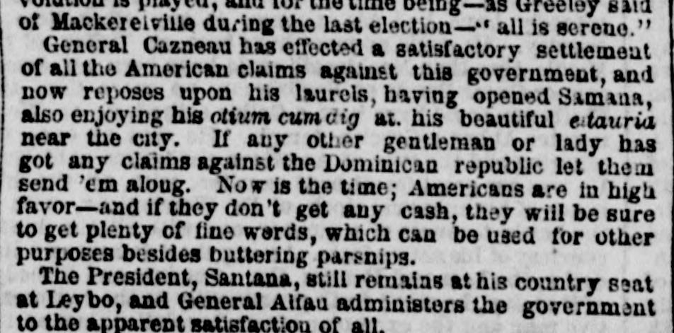
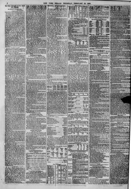

Nov is the time; Americans are in high favor?and if theyAhora es el momento; los estadounidenses gozan de alto favor, y si ellos
The New York Herald. New York [N.Y.], February 23, 1860. Page 2. Also published as the New York Daily Herald. Published by James Gordon Bennett. A daily newspaper, 1840–1920.The New York Herald. New York [N.Y.], 23 de febrero de 1860. Página 2. También publicado como New York Daily Herald. Publicado por James Gordon Bennett. Periódico diario, 1840–1920. View the originalVer el original


See the full pageVer la página completaThe newspaper reported that President Santana remained at his country seat in Leybo while General Alfau administered the government, and noted the appointment of Don Pedro Ricart y Torres as Minister of Hacienda and Commerce. It also recorded the shipwreck of the French brig Duchess Anne near the east end of Saona due to incorrect charts, and mentioned that the government made propositions to Col. Fabens to bring out a thousand emigrant families.El periódico informó que el presidente Santana permanecía en su finca campestre de El Seibo mientras el general Alfau administraba el gobierno, y destacó el nombramiento de don Pedro Ricart y Torres como ministro de Hacienda y Comercio. También consignó el naufragio del bergantín francés Duchess Anne cerca del extremo oriental de la Saona a causa de cartas náuticas inexactas, y mencionó que el gobierno hizo proposiciones al coronel Fabens para trasladar al país a mil familias de emigrantes.
FULL TEXT:TEXTO COMPLETO:
of Mackerelville during the last election—‘all is serene.’de Mackerelville durante la última elección —«todo está sereno».
General Cazneau has effected a satisfactory settlement of all the American claims against this government, and now reposes upon his laurels, having opened Samana, also enjoying his otium cum dig at his beautiful estauria near the city. If any other gentleman or lady has got any claims against the Dominican republic let them send ’em along. Now is the time; Americans are in high favor—and if they don’t get any cash, they will be sure to get plenty of fine words, which can be used for other purposes besides buttering parsnips.El General Cazneau ha efectuado un arreglo satisfactorio de todas las reclamaciones estadounidenses contra este gobierno, y ahora reposa sobre sus laureles, habiendo abierto Samaná, también gozando su otium cum dig en su hermosa estauria cerca de la ciudad. Si cualquier otro caballero o dama tiene reclamaciones algunas contra la república dominicana que las envíen. Ahora es el momento; los estadounidenses están en alto favor —y si no obtienen efectivo alguno, estarán seguros de obtener muchas palabras finas, que pueden usarse para otros propósitos además de untar chirivías.
The President, Santana, still remains at his country seat at Leybo, and General Alfau administers the government to the apparent satisfaction of all.El Presidente, Santana, todavía permanece en su casa de campo en Leybo, y el General Alfau administra el gobierno a la satisfacción aparente de todos.
This collection gathers the coverage of the Dominican Republic in the American press, in the order it was published.Esta colección reúne la cobertura de la República Dominicana en la prensa estadounidense, en el orden en que se publicaron.